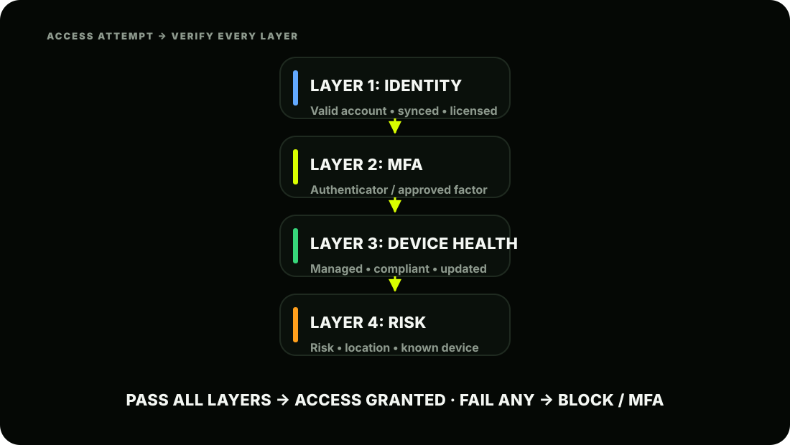
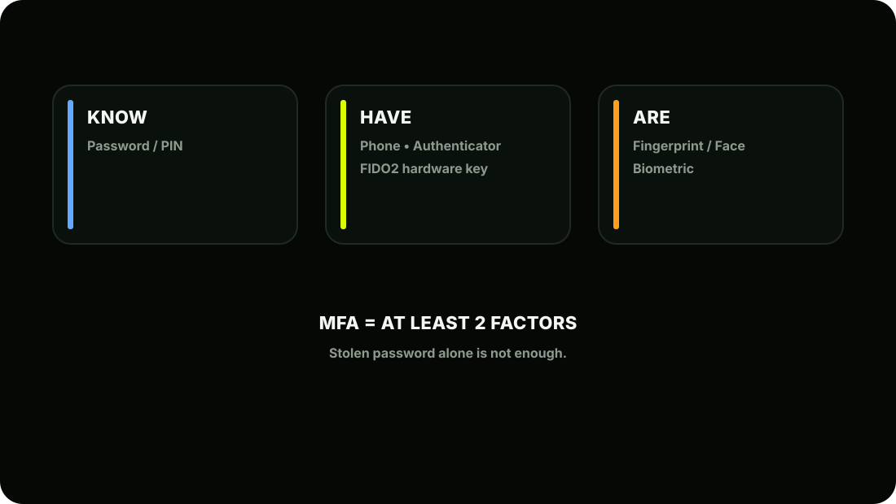
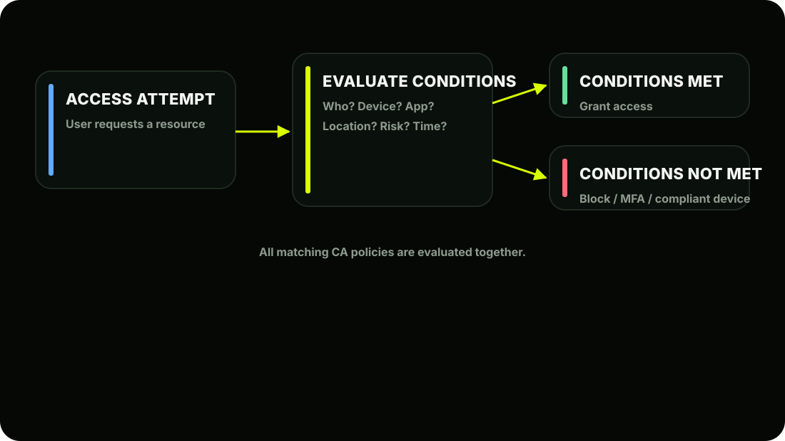

The Scene
It's 11:47 PM on a Tuesday. Ashpak is about to sleep when his phone buzzes. A Microsoft security alert:
"Suspicious sign-in detected. User: priya@ashscript.com . Location: Bucharest, Romania. Time: 23:41 IST."
His heart rate spikes for exactly three seconds. Then he remembers; he spent all of last Thursday configuring Conditional Access policies for AshScript. He opens the Entra ID sign-in logs on his phone and sees:
The attacker had Priya's correct password; probably from a phishing attack or a data breach on another site. But they had no managed, compliant device. Conditional Access stopped them cold. Ashpak screenshots the log, forwards it to Riya with the note: "This is why we did this." Then he puts his phone down and sleeps perfectly. This lesson is about building exactly that protection.
Understanding Zero Trust
Before we touch the portal, you need to understand the philosophy that drives everything in this lesson. The old security model that AshScript used to follow:
The new model that Intune + Entra ID enables:

Part 1: Multi-Factor Authentication (MFA)
What is MFA? MFA requires users to prove their identity using two or more verification methods:
Even if an attacker steals Priya's password; they still can't sign in without her phone. That's the power of MFA.
MFA Methods Available in Entra ID
Method Security Level User Experience
Microsoft Authenticator app (push) Recommended:Recommended:Recommended:Recommended:Recommended: Excellent; one tap
Microsoft Authenticator (passwordless) Recommended:Recommended:Recommended:Recommended:Recommended: Best; no password at all
FIDO2 Hardware Key (YubiKey etc.) Recommended:Recommended:Recommended:Recommended:Recommended: Excellent; physical key
Windows Hello for Business Recommended:Recommended:Recommended:Recommended:Recommended: Seamless; biometric/PIN
Authenticator app (TOTP code) Recommended:Recommended:Recommended:Recommended: Good; 6-digit code
SMS / Phone call Recommended:Recommended: Weakest; SIM swap risk
AshScript's standard: Microsoft Authenticator app with push notifications for all employees. SMS is disabled; it's the weakest MFA method and vulnerable to SIM swapping attacks.
Registering MFA for Users Before Conditional Access can enforce MFA, users must register their MFA method. Ashpak handles this carefully:
Ashpak's rollout plan for AshScript:
Never enable Conditional Access MFA enforcement before users have registered. If you enforce MFA on Monday and users haven't registered yet, they'll be locked out of their accounts. Ashpak always gives users 2 weeks to register before enforcement kicks in.
Monitoring MFA Registration Status
Or the dedicated report:

| Method | Security Level | User Experience |
|---|---|---|
| Microsoft Authenticator app (push) | Recommended:Recommended:Recommended:Recommended:Recommended: | Excellent; one tap |
| Microsoft Authenticator (passwordless) | Recommended:Recommended:Recommended:Recommended:Recommended: | Best; no password at all |
| FIDO2 Hardware Key (YubiKey etc.) | Recommended:Recommended:Recommended:Recommended:Recommended: | Excellent; physical key |
| Windows Hello for Business | Recommended:Recommended:Recommended:Recommended:Recommended: | Seamless; biometric/PIN |
| Authenticator app (TOTP code) | Recommended:Recommended:Recommended:Recommended: | Good; 6-digit code |
| SMS / Phone call | Recommended:Recommended: | Weakest; SIM swap risk |
Part 2: Conditional Access
What is Conditional Access? Think of Conditional Access as a smart security guard that sits in front of every Microsoft 365 resource. Every time someone tries to access anything; email, SharePoint, Intune, Teams; the
guard checks a set of conditions and makes a real-time decision.
Anatomy of a Conditional Access Policy
The most important button in Conditional Access: Report-Only mode. Always create new CA policies in Report-Only first. This lets you see exactly who would be affected; without actually blocking anyone. Move to On only after reviewing the impact. Skipping this step has locked thousands of users out of their accounts in real environments.

Building AshScript's Conditional Access Policies
Ashpak designs five CA policies for AshScript. We'll build each one together.
Navigate to Conditional Access
Policy 1: Require MFA for All Users
"Every AshScript employee must use MFA to access any cloud resource."
Warning: Always exclude break-glass accounts from ALL CA policies. If your CA policies have a misconfiguration and lock everyone out, these excluded accounts are how you get back in. Never forget this step.
Policy 2: Block Legacy Authentication
"Block old apps that don't support MFA; they're a massive security hole." Legacy authentication = old email protocols like POP3, IMAP, SMTP AUTH, and older Office clients that bypass MFA entirely. Attackers love these because MFA can't protect them.
Real-world tip: Before enabling this policy, check the sign-in logs to see how many users are currently using legacy auth. Filter by Client App = "Other clients" or "Exchange ActiveSync." If many users are affected, you need to migrate them to modern auth apps first.
Policy 3: Require Compliant Device for Corporate Apps
"Only devices managed and compliant in Intune can access company resources." This is the policy that stopped the Romania attacker in our opening story.
38 ──────────────────────────────────────────── 39 → Create
Why "Require one of" instead of "Require all"? During AshScript's migration, not all 1,000 laptops are Intune-enrolled yet. Some are still just domain-joined. Using "Require one of" means a domain-joined laptop (Hybrid Entra Joined) OR an Intune-compliant device both satisfy the policy. This prevents locking out users during the migration period. Once everyone is fully enrolled, Ashpak will tighten this to "Compliant device only."
Policy 4: Protect Admin Accounts: Always MFA
"Admins face higher risk. They must always MFA; no exceptions."
Policy 5: Block High-Risk Sign-ins
"If Microsoft detects a risky sign-in; block it automatically." This uses Entra ID's Identity Protection risk scoring (requires Entra ID P2, available in M365 E5). For AshScript on E3, Ashpak configures a lighter version using sign-in risk:
Named Locations: Teaching Conditional Access Where You Are
AshScript has offices in Mumbai and Pune with fixed IP addresses. Ashpak can tell Conditional Access to trust these locations:
Now Ashpak can create policies like: "If signing in from outside trusted locations; always require MFA" "If signing in from a blocked country; always block"
Block specific countries:
Reading the Sign-in Logs: Your Investigation Tool
This is what Ashpak checks every morning and what saved him the night of the Romania attack:
What each column means:
Filtering the logs: Ashpak's daily routine:
Clicking into a specific sign-in shows:
This log is your evidence trail. When leadership asks "were we attacked?"; this is your answer. When an employee says "I can't sign in"; this tells you exactly why.
Testing Conditional Access Safely: The What If Tool
Before turning any CA policy from Report-Only to On, Ashpak uses the What If tool to simulate impact:
The Full Zero Trust Picture at AshScript
AshScript's Current State: Phase 2 Complete
Key Concepts to Lock In
| Concept | Remember This |
|---|---|
| Zero Trust | Never trust, always verify; location means nothing |
| MFA | Two or more factors; Authenticator app preferred |
| Register before enforce | Users must register MFA before CA enforces it |
| CA policy structure | Assignments (IF) + Access Controls (THEN) |
| Report-Only mode | Always start here; never go live blindly |
| Break-glass exclusion | ALWAYS exclude emergency accounts from CA |
| Legacy auth block | Critical; old protocols bypass MFA entirely |
| Compliant device CA | The policy that stopped the Romania attack |
| Named Locations | Define trusted IPs; office networks |
| What If tool | Simulate CA impact before going live |
| Sign-in logs | Your investigation and evidence trail |